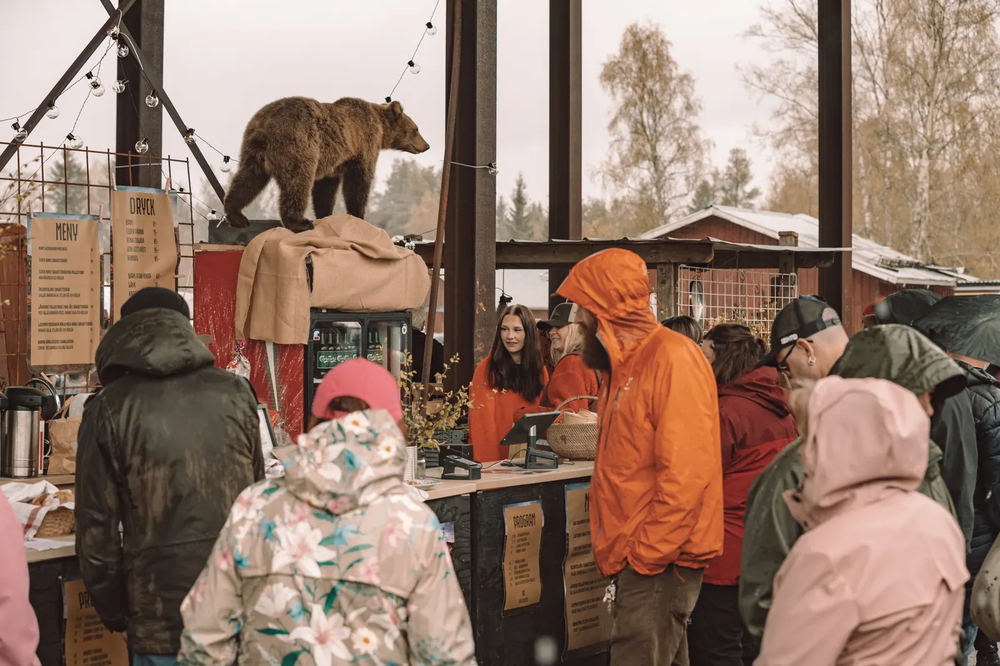

Om Backwoods
Hantverksfestivalen som tog ett nedlagt sågverk i Rot och fyllde det med folk.
Varför Backwoods?
Backwoods hämtar sina rötter ur Älvdalens historia.
Här har det alltid funnits folk som skapar, uppfinner och förädlar, och vi tycker att de förtjänar en egen festival. Så vi valde den självklara platsen: Rotsågen, kanske det coolaste gamla industriområdet i hela bygden.
Premiären gick av stapeln den 16 maj 2026. Det regnade, och folk kom ändå. Nästa gång blir lördag 15 maj 2027.
